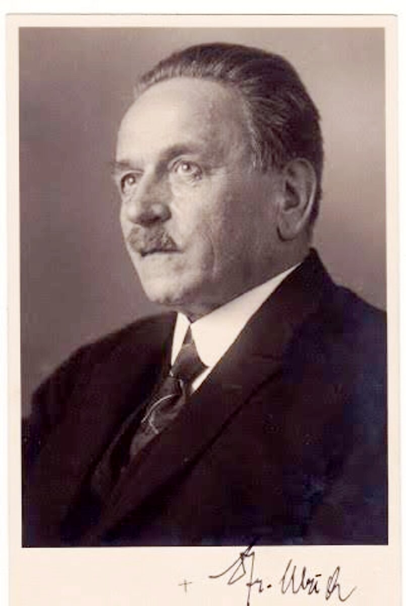
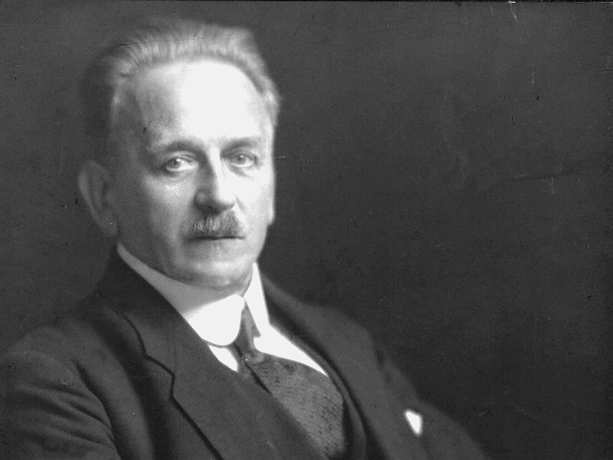
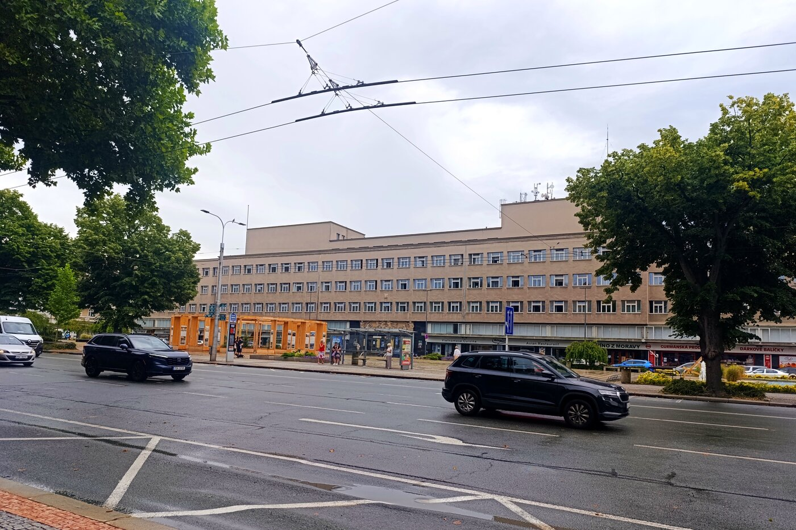

Muž, který zbavil město hradeb a udělal z něj Salon republiky.
JUDr. František Ulrich, 1859 — 1939
Čestný starosta Hradce Králové stál 34 let v čele jeho proměny z uzavřené pevnosti v moderní krajskou metropoli. Socha, která by mu to připomněla, ve městě dosud chybí.

Kdo jsme a co chceme
Lidé za tímto webem se snaží různými způsoby dosáhnout toho, aby ve městě Hradec Králové vznikla socha jeho dlouholetého a čestného starosty JUDr. Františka Ulricha. Je to dluh města, který trvá už skoro sto let — ve volbách 1929, po 34 letech ve funkci starosty, už nekandidoval.
Cílem je, jednoduše řečeno, pomoci městu Hradec Králové s tím, aby se František Ulrich své sochy už konečně dočkal. Ve skrytu doufáme, že by se to mohlo podařit k roku 2029 — přesně sto let od chvíle, kdy Ulrich funkci opustil. Chceme pomoci městu všemi způsoby, kterých budeme schopni.
Snad budou mít nově zvolení zastupitelé pro Františka Ulricha více porozumění než ti, kteří v roce 2026 svůj mandát ukončí — jeden snímek před urnou jednou za čtyři roky není zrovna moc.
Lidé stojící za tímto webem
David Kafka
Někdejší ředitel Úřadu práce, zastupitel a radní, také někdejší poslanec a náměstek ministra.
Jan Petrof
Někdejší jednatel a majitel podniku na výrobu klavírů Petrof, s.r.o.
Pokud máte zájem, přihlaste se také. Napište nám pár slov o sobě a o tom, jak byste chtěli pomoct.
Osobnost Fr. Ulricha
Renesanční osobnost, básník, právník i stavitel moderního města. Tři pohledy na jeho život a dílo — stručný životopis, jeho vlastní knihy a odborné texty, které o něm dosud vznikly.
Krátký životopis
Město Hradec Králové v době jeho mládí bylo uzavřenou pevností — nějakých 220 domů, okolo hradební systém a za hradbami předměstí. Život města byl svázaný s armádou, ale také s národním obrozením.
František Ulrich se narodil 6. února 1859 v Hradci Králové v domě „U Špuláků", jeho otec byl ředitelem reálky. Jako dítě zažil bitvu s Pruskem a jejími následky. Po maturitě pokračoval ve studiích na Právnické fakultě Karlovy univerzity v Praze, kde promoval v roce 1881. Měl nesporné literární nadání a už za studií byl členem skupiny Lumírovců a publikoval básně i prózu se skupinou Máj; literární psaní ukončil až rokem 1900.
Po studiích provozoval v Hradci Králové advokátní praxi u advokáta Františka Srdínka a po získání doktorátu se oženil s jeho dcerou Ludmilou. Spolu měli tři děti — syna Karla a dcery Marii a Ludmilu. V roce 1888 si otevřel vlastní advokátní kancelář.
V roce 1889 se stal městským zastupitelem, tehdy pod starostou Hynkem Lhotským a náměstkem Ladislavem Janem Pospíšilem. Ten si jej vybral za svého adjunkta, když se zasazoval o výkup pevnostního opevnění, protože pevnost byla zrušena jako vojenský objekt v roce 1884. Jejich společným úsilím se po mnoha letech vše podařilo. Dne 3. března 1893, když L. J. Pospíšil oznamoval zastupitelstvu, že bylo dosaženo dohody, byl ještě na pódiu stižen mrtvicí a po třech dnech zemřel.
„Jednou frak, vždycky frak" — Ulrichův výrok, který dobře vystihuje jeho smysl pro reprezentaci úřadu.
František Ulrich byl poté povolán do městské rady a ve volbách roku 1895 byl zvolen starostou města. Tím byl zvolen celkem sedmkrát a starostou zůstal až do roku 1929, tedy 34 let. Jeho nástupcem se stal Josef Václav Bohuslav Pilnáček.
Kromě toho byl dr. František Ulrich v letech 1901 a 1908 zvolen poslancem Sněmu království českého za Hradecko a Jaroměřsko. Dlouhodobě také působil v Okresním zastupitelstvu v Hradci Králové.
Dr. Ulrich byl předsedou renomovaného spolku Beseda a zajímal se o mnohé technické a rozvojové otázky — splavnění Labe, školství, zdravotní péči, dopravu, urbanismus i elektrifikaci. Výrazně se podílel na přípravě Hradecké hospodářské a národopisné výstavy v roce 1894, která zaznamenala velký úspěch. Ne úplně všechno se ovšem podařilo a některé jeho myšlenky předběhly svou dobu.
Podle současníků byl člověkem mimořádně pracovitým a svědomitým, pohotovým řečníkem, který uměl užít svého právního vzdělání. V kontaktu působil elegantně a reprezentativně, měl milé a vlídné vystupování gentlemana.
Funkce starosty se vzdal k překvapení všech v září 1929; důvod své rezignace nesdělil. Pobýval poté v rodině své dcery Ludmily v Rokycanech, kde také 18. května 1939 zemřel. Urna s jeho popelem byla dlouho ukrytá, po roce 1989 objevena a nyní je uložena v kolumbáriu Sboru kněze Ambrože.
Pod Ulrichovým vedením se město Hradec Králové od přelomu 19. a 20. století začalo proměňovat z pevnosti „v poutech hradebních" v moderní metropoli celého kraje. K urbanistickému konceptu a řízenému architektonickému rozvoji přizval vynikající soudobé osobnosti, především Jana Kotěru a Josefa Gočára. Prosadil Hradec Králové jako sídlo důležitých podniků, úřadů a institucí. Za jeho starostování se rozvíjela celá městská infrastruktura — od škol až po elektrárnu a mosty.
Rozvoj města byl v poválečné ČSR pojmem — jezdily sem delegace z mnoha zemí, do „Salonu republiky". Kolem roku 1900 existovaly vedle sebe pevnosti Josefov a Hradec Králové. Bez osobností velikosti Pospíšila a Ulricha v čele města by dnešní Hradec Králové zřejmě vypadal dost podobně jako Josefov.
František Ulrich je od roku 1921 čestným občanem Hradce Králové a od roku 1933 jeho čestným starostou. V roce 1925 po něm pojmenovali nově zbudované náměstí. Několik let uděluje město i Cenu Františka Ulricha za počiny kulturní, vědecké nebo sportovní. V budově někdejšího ředitelství železnic, dnes Krajského ředitelství policie, stojí ve vestibulu jeho malá busta.
František Ulrich byl člověkem, který vysoce převyšoval komunální horizont. Lze říci, že člověk s jeho vlastnostmi a znalostmi mohl s jistotou zastávat nejvyšší státní funkce. Přesto svou celou energii věnoval našemu městu. Sotvakdy mu budeme dost vděční.

- 1859narození v Hradci Králové
- 1881promoce na Právnické fakultě v Praze
- 1889městský zastupitel
- 1895poprvé zvolen starostou
- 1901 / 1908poslanec Sněmu království českého
- 1921čestný občan Hradce Králové
- 1929rezignace na úřad starosty
- 1933čestný starosta města
- 1939úmrtí v Rokycanech
Knihy Fr. Ulricha
Přehled knih Františka Ulricha i publikací o něm, dosud dostupných ve veřejných sbírkách.
| Název | Rok | Knihovna |
|---|---|---|
| Upomínka na počátek boření hradeb královéhradeckých 4. října 1884 | 1884 | SVK |
| Písně svatební | 1925 | MVČ, SVK |
| Model — verše z let 1878 až 1879 | 1929 | MVČ |
| Osvobození města z pout hradebních | 1935 | SVK |
| Autor | Název | Rok | Knihovna |
|---|---|---|---|
| — | Kytička blahopřejných projevů starostovi Hradce Králové JUDr. Františku Ulrichovi k jeho sedmdesátce | 1929 | MVČ |
| — | Síň král. věnného města Hradce Králové | 1894 | MVČ |
| Domečka Ludvík | Třicet let veřejné činnosti JUDra Fr. Ulricha | 1925 | MVČ |
| Fiala Jiří | Vzestup a pád Kralobanky — neúspěšný projekt starosty Hradce Králové Františka Ulricha | 1980 | SVK |
| Herain Karel | Ulrichův Hradec Králové | 1930 | MVČ |
| Sekanina František | Básník Fr. Ulrich | 1933 | MVČ |
| Škaloud Vladimír | Starosta Hradce Králové František Ulrich | 1998 | MVČ, SVK |
| Váňa Václav | Úspěšná činnost JUDr. Františka Ulricha ve snaze po úpravě středního Labe z Mělníka do Jaroměře | 1939 | MVČ |
MVČ = Knihovna Muzea východních Čech · SVK = Studijní a vědecká knihovna v Hradci Králové
Některé odborné stati a popularizující články
| Autor / autoři | Název | Zdroj |
|---|---|---|
| Benýšková J., Fiala J., Grulich P., Musil J., Pavlík J., Pospíšilová J., Potůček J., Svatošová H. | Série článků | Královéhradecko, sv. 7 |
| Doubek Zdeněk | Město Ulrichovo | Puls, ročník 1990, číslo 1 |
| Kulhavá Zdeňka | JUDr. František Ulrich – muž, který stál u přeměny města | Salonky, ročník 2025 |
| Lukášová Klára | František Ulrich v zrcadle rodinné korespondence | Královéhradecko, sv. 10 |
| Mareček Petr | Hradecký starosta Ulrich byl muž s vizí | Mladá fronta Dnes, ročník 20, číslo 3 |
| Pospíšilová Jaroslava | František Ulrich, pravý muž na pravém místě | Radnice, ročník 12, číslo 4 |
| Potoček Josef | Kdo byl JUDr. František Ulrich | Radnice, ročník 4, číslo 11 |
| Potoček Josef, Zimmermann Petr | František Ulrich, starosta, jakých se rodí málo | Hradecké noviny, 1994, čísla 31–36 |
Historie pomníků Fr. Ulricha
Dva pokusy o pomník Františku Ulrichovi — a dvě poučení do třetice. Dnes už víme, že prostory našeho města neunesou pomník, ale sochu ano.
Nadační fond a soutěž, která nedopadla
- Zřízeno: 30. května 2000, vklad města 100 000 Kč
- Soutěž vypsána: 1. května 2002, dvoukolová
- Výsledek: vítězný návrh Pavla Doskočila, prosinec 2002
Rada města dne 7. března 2000 odsouhlasila nadační fond a přípravný výbor. Nadační fond „Město Hradec Králové dr. Františku Ulrichovi" zřídilo zastupitelstvo o pár týdnů později. Správní radě se vcelku dařilo sbírat prostředky od fyzických i právnických osob, ale vznikl problém s lokací budoucího pomníku — o kterém se zatím ani nevědělo, jak bude vypadat. Občané, architekti, památkáři i skupiny architektů měli v tomto bodě různé a protichůdné názory.
Fond nakonec vypsal dvoukolovou architektonicko-výtvarnou soutěž na figurální pomník a úpravu jeho okolí na Ulrichově náměstí. Porota vybrala návrh Pavla Doskočila, který vzbudil údiv, zklamání i posměch — představoval starostu sedícího za stolem na vysokém pilíři; kdo chtěl detailnější pohled, mohl použít kukátko na druhé straně náměstí. Orgány památkové péče návrh označily za nepřípustný. Po odvoláních soutěž skončila, fond šel do likvidace a zbylé prostředky se vrátily městu.
Diorit s bílou žílou přes hlavu
- Autor: sochař Stanislav Hanzík, doporučen spolkem Mánes
- Materiál: černý diorit, doplněk ze světlého kamene
- Náklad: 2 mil. Kč socha, 1,5 mil. Kč úprava okolí
V roce 2010 oslovilo město přímo sochaře Stanislava Hanzíka, který za jeden rok vytvořil sochu Františka Ulricha z černého dioritu s doplňkem ze světlého kamene s náznakem regulačního plánu města. Diorit ale nebyl dost velký, takže nevyšlo dost kamene na ruce, a v horní partii měl bílou žílu procházející přes hlavu.
Socha byla umístěna na Náměstí Svobody v listopadu 2010 a hned se na ni snesly vlny kritiky — kromě obličeje s bílou žílou jí vyčítali shrbený postoj i hrubé opracování. Vadilo také umístění, které kolidovalo s každoročními výstavami soch z hořického sympozia. Magistrát kritiku neunesl a v červenci 2011 byl pomník z místa odvezen a uložen v areálu Technických služeb. Město ho sice reklamovalo, ale bez úspěchu; prodat se ho nepodařilo, a tak leží kdesi v bednách dodnes. Stanislav Hanzík zemřel v roce 2021.
Socha Fr. Ulricha
Z obou předchozích pokusů víme jedno jistě: nechceme pomník, chceme sochu. A víme také, kam patří.
Jakou sochu potřebujeme?
Každý umělec pro dobrou práci potřebuje zadání — jistě ne detailní, ale takové, aby zadávající nebyl nemile překvapen. Na tomto místě očekáváme i vaše názory, jak by ztvárnění k uctění starosty Františka Ulricha mělo vypadat. Rádi je zde zveřejníme.
Podle našeho názoru, který vzešel ze dvou předchozích pokusů, víme, že nechceme pomník, ale jen sochu. Dílo musí zcela jistě a nezpochybnitelně realisticky vystihovat mnohostrannou osobnost Františka Ulricha a dobu prvních dvaceti až třiceti let minulého století. K tomu lze jistě autorsky ledacos přidat. Toto zadání nazvěme třeba Klasik.
Zadání „Klasik" návrh k diskusi
- Realistická figura, stojící nebo sedící
- Oděv dobový — známý je jeho výrok „Jednou frak, vždycky frak"
- Velikost postavy přibližně 1,7–1,9 m
- Skutečná podoba obličeje
- Sokl nízký, s možností textů
- Možnost udělat si se sochou fotografii
Pokud jde o realizátora, jsme toho mínění, že vhodným sochařem, jenž je práv takové práce, by byl pan Petr Novák z Jaroměře. Je za ním rozsáhlé a hodnotné dílo, například Pomník padlým koním ve Střezeticích.
Místo pro sochu
Dnes jsou za námi dalekosáhlé diskuze, které provázely první dva pokusy. Některé návrhy byly zřejmě dobře míněné, ale v otázce lokace na Ulrichově náměstí obstály jen chabě. Oba pokusy provázela ničím neopodstatněná teze, že umístění jakékoli sochy na Ulrichově náměstí si nepřál ani sám architekt Josef Gočár. Není jasné, kde se takový názor vzal, ale mezi odbornou veřejností se dlouho objevoval.
Konec onomu lokačnímu sporu učinil Stavebněhistorický průzkum Ulrichova náměstí z roku 2025 (autoři Jakub Krček a Alžběta Karlová). Na straně 26 se praví, že sochař Bohumil Kafka měl v roce 1938 odlít bustu Františka Ulricha, ale válečné události realizaci zhatily. V roce 1939 bývalý starosta umírá a rada města — poněkud opožděně — reaguje na Gočárův dopis z roku 1936, v němž se architekt dotazuje na realizaci Ulrichova pomníku, a pokud ano, na „místo před Ředitelstvím státních drah". Tam ostatně Gočár sochu situoval i na všech variantách náměstí z let 1925 až 1930.
Doporučujeme čtenáři, aby si citovanou pasáž přečetl v originále. K výše uvedené studii přikládáme i listinu z okresního archivu, potvrzující její tvrzení.
Skutečnost je tedy taková, že už sto let je Ulrichovo náměstí — podle vlastního architekta — místem, kde má socha Františka Ulricha stát.

Fotogalerie
Dobové portréty a pamětní medaile Františka Ulricha. Klikněte na snímek pro zvětšení.
Napište nám
Máte podklady, nápad na podobu sochy, chcete se zapojit, nebo jen máte otázku? Ozvěte se — čteme všechno, i to, co si sami rovnou zařadíte do koše.
- Iniciativa za sochu Fr. Ulricha
- Hradec Králové
- info@socha-ulrich.cz (ukázková adresa)